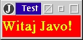
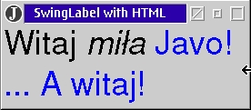

3. Aplikacje powitalne
W tym podpunkcie przedstawione zostan± dwa programy "powitalne". Zawieraj±
one elementy, które szczegó³owo bêd± omaiwane dopiero w drugim semestrze.
Proszê siê wiêc nie zra¿aæ, je¶li co¶ w opsie tych programów bêdzie niezrozumia³e. Program w Javie jest zawsze zestawem klas. Wyró¿niamy: aplikacje (wykonywane przez JVM zainstalowan± na naszym komputerze) oraz aplety (wykonywane przez ¶rodowisko przegl±darki). Dzia³anie aplikacji zaczyna siê od metody: public static void main(String[ ] args) umieszczonej w jednej z klas pliku ¼ród³owego.
import java.awt.*;
class Napis1 {
public static void main(String[] arg) {
Frame frame = new Frame("Test 1");
Label label = new Label("Witaj Javo!");
Font font = new Font("TimesRoman", Font.BOLD, 24);
label.setFont(font);
label.setBackground(Color.red);
label.setForeground(Color.yellow);
frame.add(label);
frame.pack();
frame.show();
}
}
 Korzystamy tu z obiektów klas Frame (okno tamowe - czyli z paskiem tytu³u, ikonkami systemowymi itp.), Label (etykieta), Font (pismo) i niejawnie - Color i String. Obiekty tworzy siê za pomoc± wyra¿enia new ... , np.: Frame frame = new Frame("Test1"); Tak samo tworzymy etykietê label z podanym napisem. Napisy - tu litera³y ³añcuchowe - s± w Javie obiektami klasy String. Dla etykiety Label ustalamy pismo (metoda setFont z argumementem typu Font) i kolory (za pomoc± metod, komunikatów: setForeground i setBackground z argumentem typu Color, który tu jest oznaczany przez odpowiednie sta³e z klasy Color o samoobja¶niaj±cych sie nazwach). Wreszcie, mówimy naszemu oknu frame: dodaj do siebie etytkietê oznaczan± przez label (frame.add(label)), "spakuj siê" - frame.pack() (tzn. zajmij tyle miejsca ile wymaga uwidocznienie etykiety) i poka¿ siê - frame.show(). W podobny sposób oprogramujemy aplikacjê korzystaj±ca z mo¿liwo¶ci Swingu.

import javax.swing.*;
class SwingLab {
public static void main(String[] args) {
JFrame frame = new JFrame("SwingLabel with HTML");
String htmlText = "<html><FONT SIZE=+3>" +
"Witaj <i>imi³a </i><font color=blue>Javo!<br>" +
"... A witaj!</font><font></html>";
JLabel label = new JLabel(htmlText);
frame.getContentPane().add(label);
frame.pack();
frame.show();
}
}
Pracê z komponentami AWT i Swingu poznamy dok³adnie w trakcie wyk³adów w drugim semestrze. A teraz pora zaczynaæ od podstaw. Zanim jednak zaczniemy - zainstalujmy
¶rodowisko Javy i spróbujmy uruchomiæ w nim oba przedstawione wy¿ej programiki
oraz napisaæ najpierwszy, najprostszy, ale w³asny program.
|